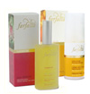

laadukasta luomukosmetiikkaa
Crystal Balance
Jalokiviin on kautta aikain yhdistetty parantavia ja tasapainottavia ominaisuuksia. Farfalla on nyt kehittänyt ainutlaatuisen tekniikan, jolla nämä kivien hienot ominaisuudet saadaan palvelemaan ihonhoitoa erityisen liuotuksen kautta.
Farfallan Jalokivi kosmetiikka -sarjassa luomukosmetiikka ylellisine tuoksuineen yhdistetään joko Turmaliinin tai Meripihkan ainutlaatuisiin ominaisuuksiin. Kivien elävöittävät ja tasapainottavat vaikutukset pääsevät oikeuksiinsa sarjan hienovaraisissa ja korkealuokkaisissa tuotteissa.
Jalokivi kosmetiikka -tuotteista löydät niin Eau de Fraîche –sprayt, voiteet kuin hurmaavat jalokiviöljyt, joilla hemmottelet sekä ihoasi että aistejasi!

Turmaliini
Crystal Balance sarjassa pääsevät esiin turmaliinin monipuoliset rauhoittavat ja energisoivat vaikutukset. Turmaliini auttaa keskittymään ja tuo sisäistä tasapainoa samalla kun se saa meidät myös ulkoisesti sädehtimään. Turmaliinilla on harvinaisen laaja väriskaala. Samoin sen hoitavat ja parantavat ominaisuudet ovat monipuoliset. Turmaliini avaa myös tukkeutuneita energiakanavia.
Sarjan tuotteet saavat ihanan tuoksunsa eteerisistä öljyistä: Ruususta ja Iiriksestä – kahdesta kukasta, jotka on liitetty tähän kiveen jo muinaista ajoista lähtien – pyöristettynä Bergamotilla ja Nerolilla.
Amber
Amberstone (meripihka) ja hienovaraisesti valikoidut eteeriset luomuöljyt antavat kasvojesi iholle uutta säteilyä. Erityisen tehokkaita tämän uutta luovan sarjan tuotteet ovat väsyneelle ja kalpealle iholle sekä iholle, joka kärsii huonosta verenkierrosta. Näissä tuotteissa meripihkan energia saadaan palvelemaan ihonhoitoa erityisen liuotuksen kautta. Hedelmäiset ja raikkaat mandariinin ja bergamotin tuoksut yhdistettynä benzoen, inkiväärin ja
vaniljan lämmittäviin ydintuoksuihin lämmittävät sydäntä ja luovat turvallisuuden tunnetta.
Sertifioitua luomukosmetiikkaa, jossa 95% valmistusaineista on luomu-laatua, – Tason 3 NaTrue.
Sertifioitua luomukosmetiikkaa, jossa 95% valmistusaineista on luomu-laatua, – Tason 3 NaTrue.